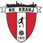
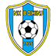
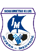
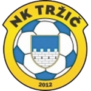
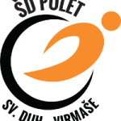
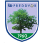
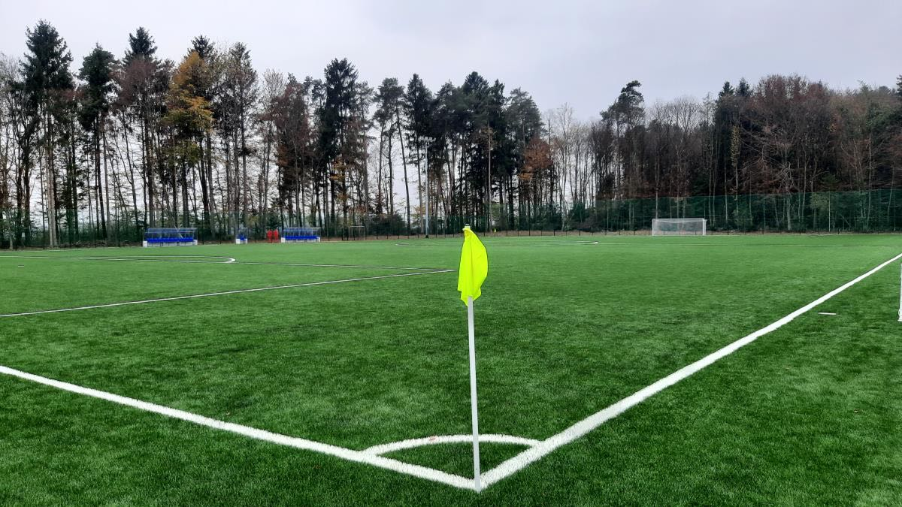
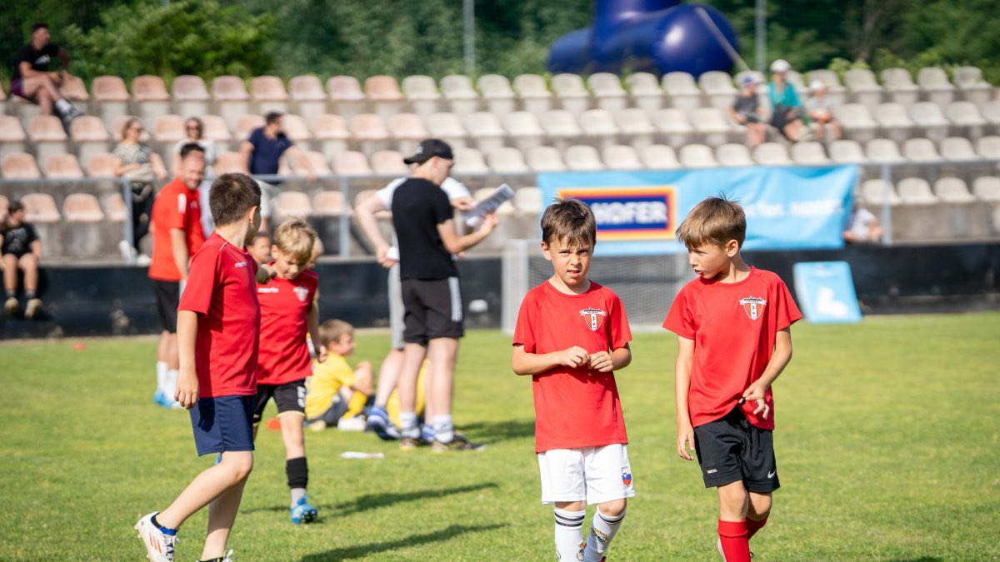

NK Zarica Kranj
Srce gorenjskega nogometa
Od cicibanov do članske ekipe.

NK Zarica Kranj 1 : 3
Bled - Bohinj Hirter sob, 30. maj 2026 · 17:00 V gosteh Merkur GNL - člani
Jezero Medvode 3 : 0 NK Kranj sob, 23. maj 2026 · 17:00 Doma Merkur GNL - člani NK Zarica Kranj 1 : 4 Velesovo - Cerklje čet, 14. maj 2026 · 17:00 V gosteh Merkur GNL - člani
Tržič 2012 0 : 1 NK Kranj sob, 9. maj 2026 · 17:00 Doma Merkur GNL - člani NK Zarica Kranj 4 : 2
Polet sre, 6. maj 2026 · 17:00 V gosteh Merkur GNL - člani
Eltron Preddvor 4 : 0 NK Kranj sob, 25. apr 2026 · 17:00 Doma Merkur GNL - člani NK Zarica Kranj 1 : 1 Kranjska Gora sob, 18. apr 2026 · 17:00 Doma Merkur GNL - člani Sava Kranj 3 : 0 NK Kranj sob, 11. apr 2026 · 17:00Nova sezona se začne kmalu. Razpored objavimo takoj, ko ga MNZ potrdi.



Otroška nogometna šola in Cici gol za predšolske otroke. Vpisujemo vse leto.
Prijavi otrokaVsak državljan lahko odloči, komu nameni do 1 % svoje dohodnine. Vas ne stane nič, klubu pa ogromno pomeni.
Prenesi obrazec
Da. Obrazec vas čaka na gumbu levo, izpolnite ga in podpišete.
Oboje gre. Po pošti na Savska loka 27, 4000 Kranj, ali podpisanega in skeniranega na nkkranj@t-2.net. Lahko ga oddate tudi trenerju ali neposredno na FURS.
Nič. Gre za del dohodnine, ki ga sicer obdrži država. Če ga ne namenite nikomur, ostane državi.